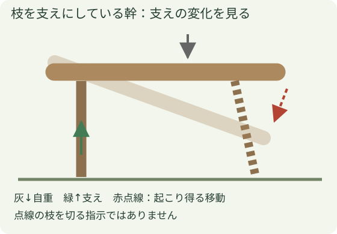
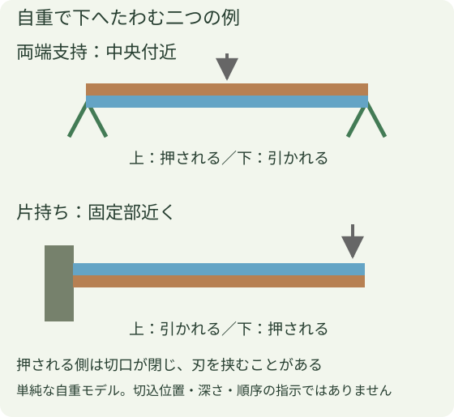
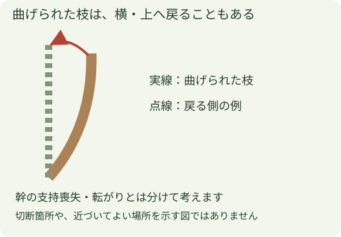
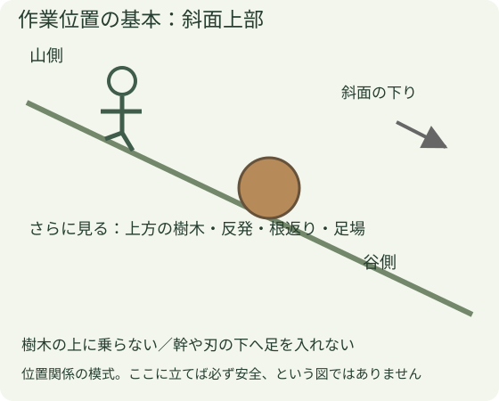

枝払い・小切りの実務基礎
この章でつかむこと
切る順番を暗記する前に、どこが樹木を支え、一本切ると何が変わるかを図から説明します。圧縮・引張りの図は力の仕組みを読むためのもので、切込みの指示ではありません。
枝払いは枝を切り落とす作業、小切りは切った樹木を扱う長さに分ける作業です。取説・公的資料では「玉切り」「造材」と呼ぶ作業も含みます。最初に読むのは、刃を入れる場所より樹木の支えです。
図を前後で読む
- 切る前：地面・枝・他の樹木のどこで支えられているかを指で追います。
- 支えがなくなると：落下、転がり、滑り、曲げられた枝の戻りを別々に考えます。
- 一本切った後：残った支えと力の向きを見直します。最初に考えた状態が続くとは限りません。
図の点線は「起こり得る変化」の例です。そこだけを避ければ安全という範囲表示ではありません。
1 切る前に、何が支えているか

地面、枝、切株、別の樹木のどこが重さを受けているかを確認します。下にある枝が幹を支えていれば、枝を切ることで幹が落ちる・回る場合があります。支え枝は、幹の安定を確認してから扱います。
2 押される側・引かれる側を分ける

押される側は切口が閉じやすく、バーを挟むことがあります。引かれる側は切口が開く側です。両端支持と片持ちでは上下が入れ替わるため、「いつも上から」「いつも下から」では判断できません。
どこからどれだけ切るかは、支持・荷重・用具・技能を合わせて選ぶ実技です。この図の色を、そのまま切込順序や深さへ読み替えません。
3 枝の反発と、幹の移動を別々に

幹が動かなくても枝は跳ねることがあり、枝が外れると幹も動くことがあります。一か所を切るたびに支持と動きを見直します。枝が込み合い先端を見失う場所では、キックバックの接触も重ねて考えます。
4 作業位置を確保して進める

樹木の滑落・転落を防ぐ措置と足場を確保し、斜面上部で作業します。枝払いは原則、元口の山側から先端へ。樹木の上へ乗らず、幹やチェーンソーの下に足を入れません。同じ樹木を複数人で同時に枝払い・玉切りしません。
山側を確保できない、支え・反発・安定化が判断できない場合は、切り始める前に作業方法を確認します。かかり木・風倒木・根返りや電線近傍は、ここで説明した基本形をそのまま当てはめません。
5 一切りごとの区切り
支えと動く範囲を読む → 足場・周囲・作業方法を合わせる → 切断 → 停止して支持の変化を見直す。片付けへ入る段階でも、転がり・滑り・残ったたわみを確認します。続きは斜面と切った樹木の動き、刃の扱いは操作編へ。
出典と機種・適用範囲
- 厚生労働省：伐木等作業の安全ガイドライン（2020改正） — 節8の枝払い・玉切り、安定化・山側・支え枝・同時作業の条件。
- Husqvarna：玉切りの方法 — 支持・圧縮／引張り・切断後の動きの原理。
- Husqvarna：枝払いの方法 — 枝の重さと張力、切断後の動きを見る。メーカー方式の立ち位置を国内ルールへ置換していません。
2026年10月25日確認。メーカー図・写真は転載せず、会社写真と独自の模式図を使っています。